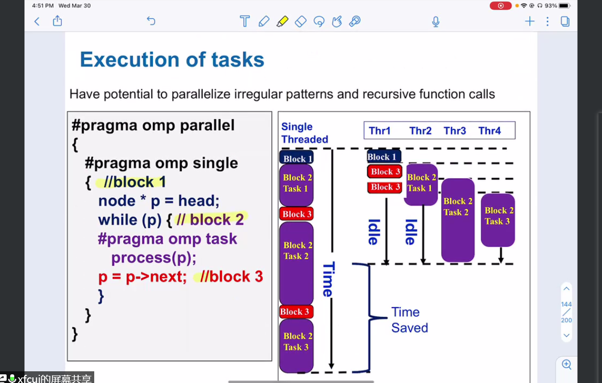

parallel algorithm course 04
synchronization has costs
simple list traversal
// linked list
p = head;
while (p) {
process(p);
p = p->next;
}compute all p in advance
#pragma omp parallel for schedule(static, 1)
for (int i = 0; i < count; ++i)
process(parr[i]);task
#pragma omp parallel {
// not often used
#pragma omp task
foo();
#pragma omp barrier
// more common case
#pragma omp single {
#pragma omp task
bar();
}
}example (with bug)
int fib(int n) {
int x, y; // private
if (n < 2) return n;
#pragma omp task
// need `shared(x)`. by default, task copy the whole stack,
// x is in different address
x = fib(n-1);
#pragma omp task // need `shared(y)`, default is private in task
y = fib(n-2);
#pragma omp taskwait
return x+y; // wrong here!!!
}
#pragma omp parallel single
fib(n);two important points
barrier
data env
example 2 (with bug)
list ml;
Element *e;
#pragma omp parallel
#pragma omp single
{
for (e=ml->first; e; e=e->next)
#pragma omp task // need firstprivate(e)
process(e); // has data racing
}return to first example
#pragma omp parallel
{
#pragma omp single
{
node* p = head;
while(p) {
#pragma omp task firstprivate(p)
process(p);
p = p->next;
}
}
}
merge sort
directly using parallel
\(T_1=2T_1(\frac{n}{2})+O(n)=O(n\cdot log(n)\)
\(T_\infty=T_\infty(\frac{n}{2})+O(n)=O(n)\)
use a differernt merge method
parallel merge
say here we have two sorted seqs (\(\le\))
\(A=a_1,\dots,a_n\) and \(B=b_1,\dots,b_n\)
let \(t=a_{\lceil \frac{n}{2}\rceil}\), split A and B into sub arr \(A_1,A_2,B_1,B_2\) s.t. \(A_1\le t, B_1\le t\) and \(A_2\gt t, B_2\gt t\)
so seq \(A_1,B_1,A_2,B_2\) is semi-merged by t, then go on with \(merge(A_1,B_1)\) and \(merge(A_2,B_2)\)
random number generating problem
problem
example: approximate \(\pi\) using Monto Carlo
seed(SEED);
#pragma omp parallel for private(x,y) reduction (+:n_in_circle)
for(int i = 0; i < num_trials; i++) {
x = random();
y = random();
if (x*x + y*y <= r*r) n_in_circle ++;
}
pi = 4.0 * (1.0 * n_in_circle / num_trials);Linear Congruential Generator(LCG) (has data racing problem)
int random_last = 0;
// need
// #pragma omp threadprivate(random_last)
int random() {
random_next = (MULTIPLIER * random_last + ADDEND) % PMOD;
random_last = random_next;
return random_next;
}parameter: (one possible parameter suite) MULTIPLIER=1366, ADDEND=150889, PMOD=714025
has a period (less than PMOD)
single thread and multi-thread has different accuracy (multi-thread has poor performance)
data racing on var random_last
solution 1
add #pragma omp threadprivate(random_last) under int random_last=0
has a local copy of random_last when creating a thread
similar to firstprivate
problem: still poor than single thread version
different random range in threads maybe overlap
solution 2
Leap Frog method
generate different seeds for each thread
situation for ADDEND=0
#pragma omp single
{
nthreads = ...
iseed = PMOD / MULTIPLIER;
pseed[0] = iseed;
mult_n = MULTIPLIER;
for (int i = 0; i < nthreads; i++) {
iseed = (unsigned long long) ((MULTIPLIER * iseed) % PMOD);
pseed[i] = iseed;
mult_n = (mult_n * MULTIPLIER) % PMOD;
}
id = ...
random_last = (unsigned long long) pseed[id];
}